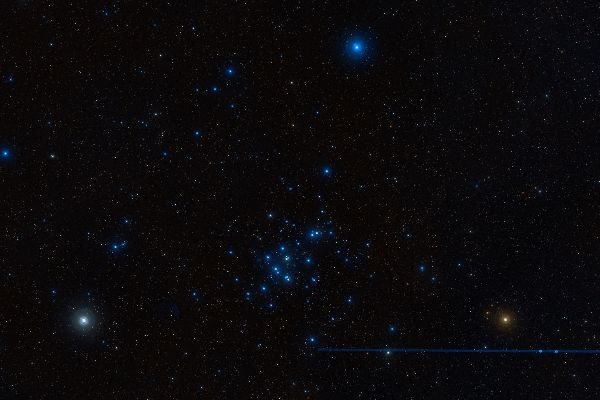
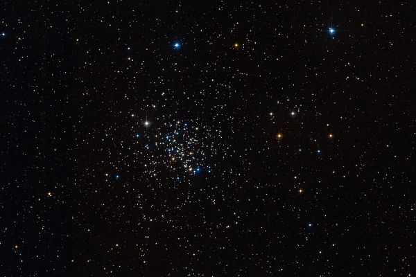

Латинское название: Cancer
Это тот рак, что вцепился Гераклу в пятку во время его второго подвига - уничтожения Лернейской гидры. Кажется, здесь нет вариантов!
Одно из наиболее известных рассеянных звездных скоплений: видимое невооруженным глазом, оно не только было известно в древности, но, вместе с двумя соседними с ним звездами, стало "зародышем" будущего созвездия: оно так и называлось Ослиные Ясли. Другое название - Улей, официальное - M44.
Еще одно рассеянное звездное скопление. Одно из самых старых: звезды его имеют возраст сравнимый с возрастом Солнца - а это возраст почтенный.
